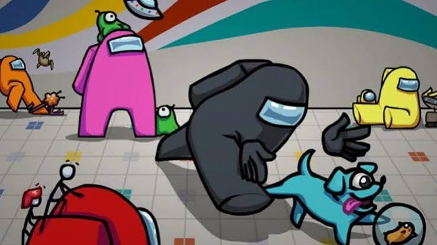

Trabajo de Investigación Formativa
Portal Web Temático Multimedia

AMONG US: ANÁLISIS CINEMATOGRÁFICO DE ROLES, DINÁMICAS DE DEDUCCIÓN Y SUPERVIVENCIA ESPACIAL
| Estudiante (Apellidos y Nombres): | CABALLERO GUTIERREZ MARCELO GUSTAVO |
| Asignatura / Curso: | INFORMÁTICA II |
| Docente: | LUIS HONORATO PITA ASTENGO |
| Facultad / Escuela: | ING. DE SISTEMAS E INFORMÁTICA |
| Ciclo Académico: | CICLO II - 2026 |
| Modalidad de Proyecto: | HTML Y CSS |
ÍNDICE GENERAL DEL PORTAL WEB
01. PÁGINA PRINCIPAL DEL TEMA
Introducción general, marco histórico, galería multimedia (sonido y vídeo) y catálogo general.
SUBTEMAS SECUNDARIOS: CATEGORÍA TRIPULACIÓN
Secundario 1: Tripulante
Mecánicas base y tareas.
Secundario 2: Científico
Monitor biométrico y batería.
Secundario 3: Juez
Veredicto forzado en asamblea.
Secundario 4: Detective
Rastreo de huellas cromáticas.
Secundario 5: Alertador
Alarma sónica y baliza visual.
Secundario 6: Localizador
Telemetría en minimapa.
Secundario 7: Ingeniero
Movilidad en ductos de aire.
Secundario 8: Ángel Guardián
Escudo protector espectral.
Secundario 9: Influencer
Transmisión y liderazgo de red.
SUBTEMAS SECUNDARIOS: CATEGORÍA IMPOSTORES
03. FUENTES BIBLIOGRÁFICAS (UNE-ISO 690)
Monografías, publicaciones digitales, devlogs de Innersloth y referencias normadas.